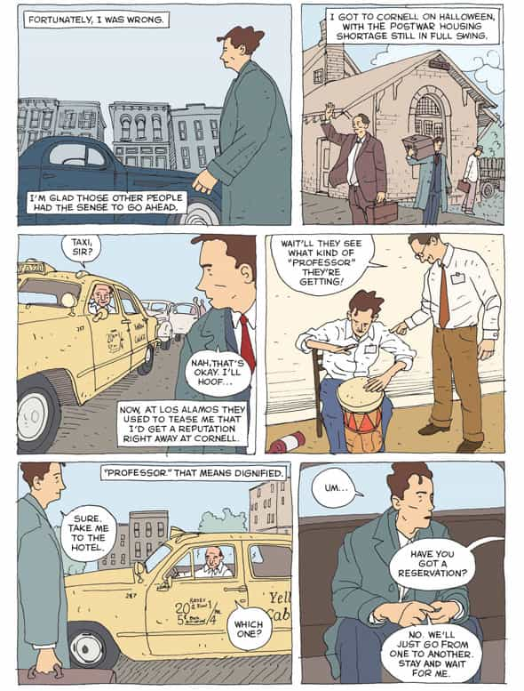

Daryush "Roosh" Valizadeh created ROK in October 2012. You can visit his blog at RooshV.com or follow him on Twitter and Facebook.


This is an illustrated book of anecdotes from the life of American scientist Richard Feynman, whose book Surely You’re Joking, Mr. Feynman, along with Walden, influenced me in my mid 20s to find my own path. About half of the stories in this book were new to me even though I’m familiar with Feynman’s work.
“If you ask a question, and no one can answer, you’re at the edge of knowledge.” (paraphrase)
[…]
“In science, we don’t have perfect theories, and we do just fine with successive approximations.”
[…]
In response to an offer to work for a secret government project: “I don’t want my brain clogged with stuff I can’t talk about.”

This book is actually a great introduction to red pill thinking for teenage males, where “red pill” refers to a search for truth based on scientific principles. My 17-year-old brother read it and I believe the book did much more in inculcating him to observe, think for himself, and respect the scientific method than I could if I proselytized to him outright.
The book did lose me when trying to explain quantum electrodynamics, but that was but a small stain in a well-produced book that has only increased my respect for the late scientist. Recommended.
Read More: “Feynman” on Amazon